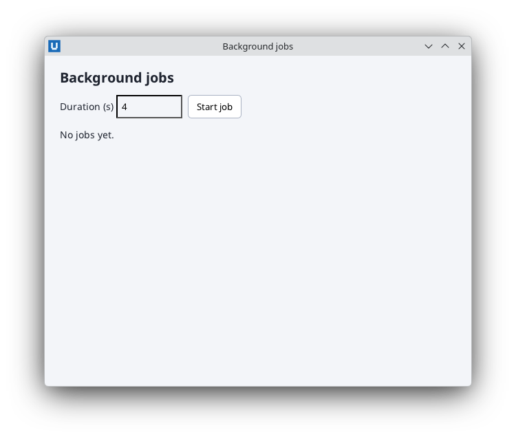

Background jobs¶
Concurrent jobs with progress bars and cancel buttons.
Same example in Python: Background jobs

Real capture on KDE Plasma 6.6 Wayland with the released packages.
What it teaches: Start-NativeHTMLKitTask chains; progress; Stop-NativeHTMLKitTask; the task limit and a queue.
Run it¶
pwsh -File 18-background-jobs.ps1
Related guide: background work
Source: 18-background-jobs.ps1¶
# 18-background-jobs.ps1 - start, watch and cancel several background jobs from the UI.
#
# Teaches: concurrent work with Start-NativeHTMLKitTask (each job is a chain of short tasks, so
# every step can report progress from -OnCompleted on the UI runspace), per-job cancellation with
# Stop-NativeHTMLKitTask (-OnFailed receives an OperationCanceledException), the task limit (at
# most 8 unfinished tasks per application: further jobs wait in a queue), inserting rows with
# Set-NativeHTMLKitDocumentHtml -Position beforeend, and finishing a row with one atomic batch.
# This is the PowerShell counterpart of the Python SDK's asyncio job runner.
#
# Run: pwsh -File ./18-background-jobs.ps1 (or powershell.exe -NoProfile -File .\18-background-jobs.ps1)
# -SelfTest runs jobs to completion, cancels one, checks the queue and quits.
param([switch]$SelfTest)
$ErrorActionPreference = 'Stop'
Import-Module NativeHTMLKit
$app = Start-NativeHTMLKitScript -Name 'Background jobs'
try {
$window = New-NativeHTMLKitWindow -Application $app -Title 'Background jobs' -Width 620 -Height 480
$doc = Open-NativeHTMLKitHtml -Window $window -Html @'
<!doctype html>
<html><head><meta charset="utf-8"><style>
body { margin:0; padding:18px 22px; font:14px sans-serif; background:#f3f5f9; color:#1f2430; }
h1 { font-size:20px; margin:0 0 12px; }
form { display:flex; gap:8px; margin-bottom:14px; }
input { width:80px; padding:6px; }
button { padding:6px 12px; border:1px solid #a9b2c3; border-radius:5px; background:#fff; cursor:pointer; }
.job { background:#fff; border-radius:8px; padding:10px 12px; margin-bottom:8px; display:flex; gap:12px; align-items:center; }
.job .name { width:70px; font-weight:bold; }
.track { flex:1; height:8px; background:#e2e6ee; border-radius:4px; }
.fill { height:8px; width:0%; background:#3b74e8; border-radius:4px; }
.job.done .fill { background:#2f9e5b; } .job.cancelled .fill { background:#c4573a; }
.state { width:90px; color:#5d6678; }
</style></head>
<body>
<h1>Background jobs</h1>
<form id="new-job"><label>Duration (s) <input id="seconds" type="number" min="1" max="30" value="4"></label>
<button id="start" type="submit">Start job</button></form>
<div id="jobs"></div>
<p id="summary">No jobs yet.</p>
</body></html>
'@
$steps = 20
$maxRunning = 8 # the SDK allows 8 unfinished tasks per application
# Job id -> @{ Id; Seconds; Step; State; Task }. Callbacks change entries, never script variables.
$runner = @{ Jobs = [ordered]@{}; Queue = New-Object System.Collections.Generic.Queue[int]; NextId = 1; Random = (New-Object Random) }
# Simulated work in an isolated runspace: plain data in, plain data out.
$work = { param([int]$Milliseconds) Start-Sleep -Milliseconds $Milliseconds }
function Get-RunningCount { return @($runner.Jobs.Values | Where-Object { $_.State -eq 'running' }).Count }
function Update-Summary {
$parts = foreach ($state in 'queued', 'running', 'done', 'cancelled') {
$n = @($runner.Jobs.Values | Where-Object { $_.State -eq $state }).Count
if ($state -ne 'queued' -or $n -gt 0) { "$n $state" }
}
Set-NativeHTMLKitDocumentText -Document $doc -Element summary -Text ($parts -join ', ')
}
function Add-Job([double]$Seconds) {
$id = $runner.NextId; $runner.NextId++
$runner.Jobs[[string]$id] = @{ Id = $id; Seconds = $Seconds; Step = 0; State = 'queued'; Task = $null }
Set-NativeHTMLKitDocumentHtml -Document $doc -Element jobs -Position beforeend -Html (
('<div class="job" id="job-{0}"><span class="name">Job {0}</span>' -f $id) +
('<div class="track"><div class="fill" id="job-{0}-fill"></div></div>' -f $id) +
('<span class="state" id="job-{0}-state">queued</span><button id="job-{0}-cancel">Cancel</button></div>' -f $id))
$runner.Queue.Enqueue($id)
Start-QueuedJobs
Update-Summary
return $id
}
function Start-QueuedJobs {
while ($runner.Queue.Count -gt 0 -and (Get-RunningCount) -lt $maxRunning) {
$job = $runner.Jobs[[string]$runner.Queue.Dequeue()]
if ($job.State -ne 'queued') { continue } # cancelled while waiting
$job.State = 'running'
Set-NativeHTMLKitDocumentText -Document $doc -Element "job-$($job.Id)-state" -Text 'running'
Start-JobStep $job
}
}
function Start-JobStep($Job) {
$delay = [int]($Job.Seconds * 1000 / $steps * (0.6 + 0.8 * $runner.Random.NextDouble()))
# .GetNewClosure() keeps this function's $Job for the callbacks, which run later.
$Job.Task = Start-NativeHTMLKitTask -Application $app -ScriptBlock $work -ArgumentList @($delay) -OnCompleted {
$Job.Step++
Set-NativeHTMLKitDocumentAttribute -Document $doc -Element "job-$($Job.Id)-fill" -Name style -Value ('width:{0}%' -f [int]($Job.Step * 100 / $steps))
if ($Job.Step -lt $steps) { Start-JobStep $Job } else { Complete-Job $Job 'done' }
}.GetNewClosure() -OnFailed {
param($failure)
if ($failure -is [OperationCanceledException]) { Complete-Job $Job 'cancelled' }
else { Complete-Job $Job ('failed: ' + $failure.Message) }
}.GetNewClosure()
}
function Complete-Job($Job, [string]$Outcome) {
$Job.State = $Outcome; $Job.Task = $null
Invoke-NativeHTMLKitBatch -Document $doc -Operations @(
@{ op = 'add_class'; element = "job-$($Job.Id)"; name = $Outcome }
@{ op = 'set_text'; element = "job-$($Job.Id)-state"; text = $Outcome }
@{ op = 'remove_element'; element = "job-$($Job.Id)-cancel" })
Start-QueuedJobs
Update-Summary
}
function Stop-Job([int]$Id) {
$job = $runner.Jobs[[string]$Id]
if ($null -eq $job) { return }
if ($job.State -eq 'queued') { Complete-Job $job 'cancelled' }
elseif ($job.State -eq 'running' -and $null -ne $job.Task) { Stop-NativeHTMLKitTask -Task $job.Task } # -OnFailed finishes it
}
$null = Register-NativeHTMLKitDocumentEvent -Document $doc -Type submit -Element new-job -Callback {
$value = Get-NativeHTMLKitValue -Document $doc -Element seconds
$seconds = 4.0
if ($value -match '^\d+(\.\d+)?$') { $seconds = [Math]::Min(30.0, [Math]::Max(1.0, [double]::Parse($value, [Globalization.CultureInfo]::InvariantCulture))) }
$null = Add-Job $seconds
}
# One delegated handler for every Cancel button: job-<n>-cancel.
$null = Register-NativeHTMLKitDocumentEvent -Document $doc -Type click -Element jobs -Callback {
param($evt)
if ($evt.element -match '^job-(\d+)-cancel$') { Stop-Job ([int]$Matches[1]) }
}
Set-NativeHTMLKitReady -Application $app
if ($SelfTest) {
function Wait-For([scriptblock]$Condition) {
$clock = [Diagnostics.Stopwatch]::StartNew()
while (-not (& $Condition)) {
if ($clock.ElapsedMilliseconds -gt 60000) { throw "timed out waiting for: $Condition" }
$null = Wait-NativeHTMLKit -Application $app -TimeoutMilliseconds 50
}
}
Set-NativeHTMLKitDocumentValue -Document $doc -Element seconds -Value '1'
$null = Submit-NativeHTMLKitForm -Document $doc -Form new-job
Wait-For { $runner.Jobs.Count -eq 1 }
Wait-For { $runner.Jobs['1'].State -eq 'done' }
if ((Get-NativeHTMLKitDocumentText -Document $doc -Element summary) -ne '0 running, 1 done, 0 cancelled') { throw 'summary after one job is wrong' }
if ((Find-NativeHTMLKitElement -Document $doc -Selector '#job-1.done').matched_nodes -ne 1) { throw 'job 1 not marked done' }
if ((Find-NativeHTMLKitElement -Document $doc -Selector '#job-1-cancel').matched_nodes -ne 0) { throw 'cancel button still there' }
# Ten long jobs: eight run, two wait; cancelling frees slots.
$ids = @(1..10 | ForEach-Object { Add-Job 20 })
if ((Get-RunningCount) -ne 8) { throw "expected 8 running jobs, got $(Get-RunningCount)" }
if ((Get-NativeHTMLKitDocumentText -Document $doc -Element summary) -ne '2 queued, 8 running, 1 done, 0 cancelled') { throw 'queue summary is wrong' }
Stop-Job $ids[9] # a queued job is cancelled at once
Stop-Job $ids[0] # a running job is cancelled through -OnFailed
Wait-For { $runner.Jobs[[string]$ids[0]].State -eq 'cancelled' }
Wait-For { $runner.Jobs[[string]$ids[8]].State -eq 'running' }
if ((Get-NativeHTMLKitDocumentText -Document $doc -Element "job-$($ids[0])-state") -ne 'cancelled') { throw 'cancelled state not shown' }
foreach ($id in $ids) { Stop-Job $id }
Wait-For { (Get-RunningCount) -eq 0 }
if ((Get-NativeHTMLKitDocumentText -Document $doc -Element summary) -ne '0 running, 1 done, 10 cancelled') { throw 'final summary is wrong' }
[Console]::Out.WriteLine('SELFTEST PASS 18-background-jobs')
$null = Request-NativeHTMLKitQuit -Application $app
}
Wait-NativeHTMLKit -Application $app -UntilShutdown
} finally {
Close-NativeHTMLKit -Application $app
}